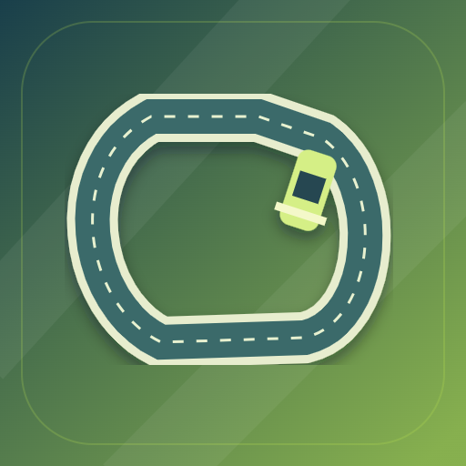

<- all projects

Traçado
PC
Volume
Live
Make the track. Earn the lap.
Build the course you want to master. Drag numbered points to shape a closed circuit, set each section's surface and banking within the brief's budget and rules, then take the wheel and pass all twelve timing gates in order to prove your design works. Compare your trace against the ideal line and your own ghost, revise the track and go again. There are 24 sites across six locations, eight surfaces and four cars with different power, braking, grip and steering, plus seeded briefs, daily challenges, a free-building workshop and guided demonstrations that teach the racing line.